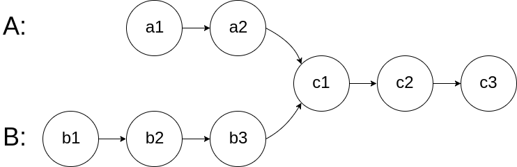
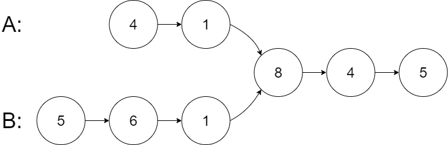
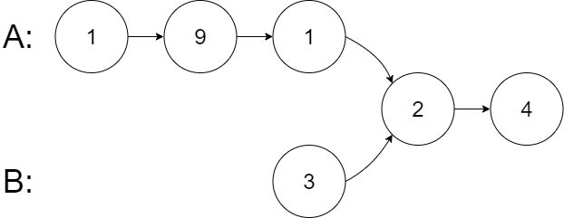
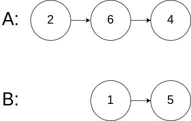

| Category | Difficulty | Likes | Dislikes |
|---|---|---|---|
| Algorithms | Easy | 16300 | 1475 |
google | linkedin | facebook | microsoft | amazon | bloomberg | goldman-sachs | wells-fargo | apple | tiktok | airbnb | nvidia | accenture
Given the heads of two singly linked-lists headA and headB, return the node at which the two lists intersect. If the two linked lists have no intersection at all, return null.
For example, the following two linked lists begin to intersect at node c1:

The test cases are generated such that there are no cycles anywhere in the entire linked structure.
Note that the linked lists must retain their original structure after the function returns.
Custom Judge:
The inputs to the judge are given as follows (your program is not given these inputs):
intersectVal - The value of the node where the intersection occurs. This is 0 if there is no intersected node.listA - The first linked list.listB - The second linked list.skipA - The number of nodes to skip ahead in listA (starting from the head) to get to the intersected node.skipB - The number of nodes to skip ahead in listB (starting from the head) to get to the intersected node.The judge will then create the linked structure based on these inputs and pass the two heads, headA and headB to your program. If you correctly return the intersected node, then your solution will be accepted.
Example 1:

Input: intersectVal = 8, listA = [4,1,8,4,5], listB = [5,6,1,8,4,5], skipA = 2, skipB = 3
Output: Intersected at '8'
Explanation: The intersected node's value is 8 (note that this must not be 0 if the two lists intersect).
From the head of A, it reads as [4,1,8,4,5]. From the head of B, it reads as [5,6,1,8,4,5]. There are 2 nodes before the intersected node in A; There are 3 nodes before the intersected node in B.
- Note that the intersected node's value is not 1 because the nodes with value 1 in A and B (2nd node in A and 3rd node in B) are different node references. In other words, they point to two different locations in memory, while the nodes with value 8 in A and B (3rd node in A and 4th node in B) point to the same location in memory.Example 2:

Input: intersectVal = 2, listA = [1,9,1,2,4], listB = [3,2,4], skipA = 3, skipB = 1
Output: Intersected at '2'
Explanation: The intersected node's value is 2 (note that this must not be 0 if the two lists intersect).
From the head of A, it reads as [1,9,1,2,4]. From the head of B, it reads as [3,2,4]. There are 3 nodes before the intersected node in A; There are 1 node before the intersected node in B.Example 3:

Input: intersectVal = 0, listA = [2,6,4], listB = [1,5], skipA = 3, skipB = 2
Output: No intersection
Explanation: From the head of A, it reads as [2,6,4]. From the head of B, it reads as [1,5]. Since the two lists do not intersect, intersectVal must be 0, while skipA and skipB can be arbitrary values.
Explanation: The two lists do not intersect, so return null.
Constraints:
listA is in the m.listB is in the n.1 <= m, n <= 3 * 1041 <= Node.val <= 1050 <= skipA <= m0 <= skipB <= nintersectVal is 0 if listA and listB do not intersect.intersectVal == listA[skipA] == listB[skipB] if listA and listB intersect.Follow up: Could you write a solution that runs in
O(m + n) time and use only O(1) memory?